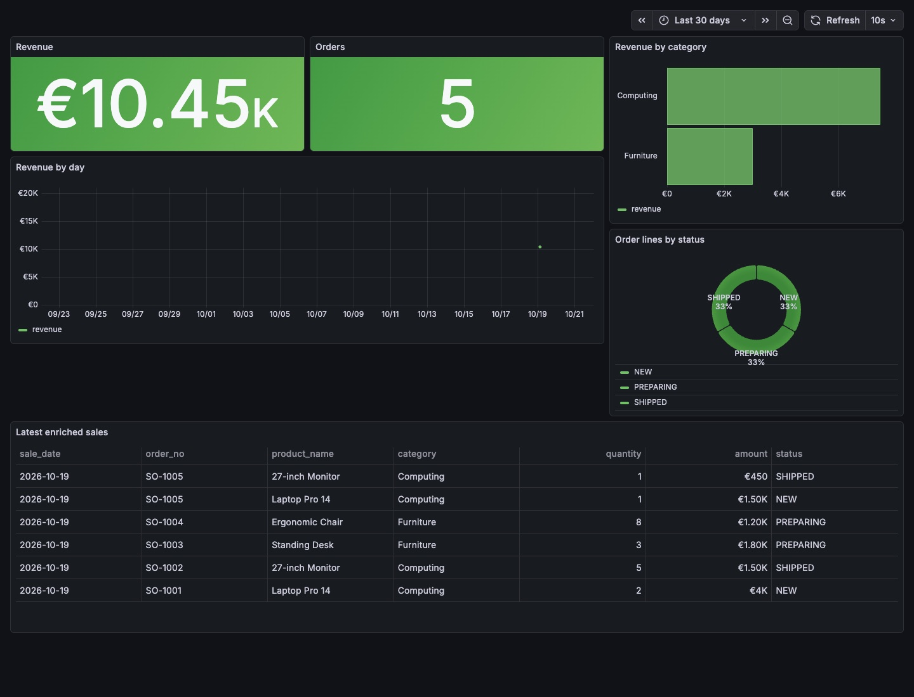
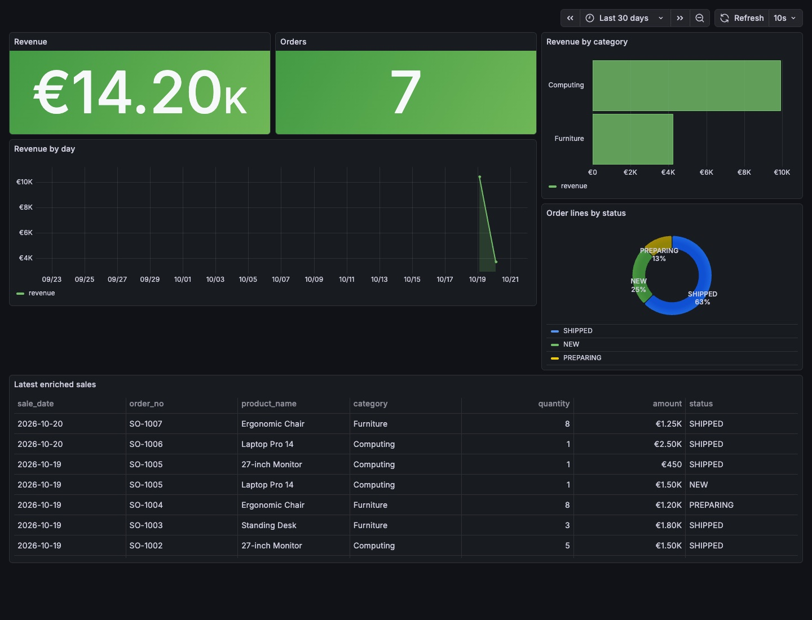

A frozen ERP feeds a real Grafana dashboard, with no extra connector.
The ERP exports its sales and catalogue as CSV. lumnik joins them, and Grafana reads the entity through a read-only PostgreSQL login bound to its tenant. Monday: EUR 10,450. On Tuesday the export changes: EUR 14,200, and the changed sale appears once.
manifests/10-products.yaml
apiVersion: connectors.lumnik.io/v1kind: Connectormetadata: name: legacy-bi-products-b connector_type: csv-file scopes: [sales-bi]spec: transport: kind: local path: /tmp/lumnik-scenario/legacy-sales-grafana/b/products.csv parser: has_header: true after_process: none mapping: dataset: - require-headers: columns: [product_id, product_name, category] cell: - clean: columns: [product_name, category] strip: true remove-control-chars: true normalize-unicode: NFCmanifests/20-sales.yaml
apiVersion: connectors.lumnik.io/v1kind: Connectormetadata: name: legacy-bi-sales-b connector_type: csv-file scopes: [sales-bi]spec: transport: kind: local path: /tmp/lumnik-scenario/legacy-sales-grafana/b/sales.csv parser: has_header: true after_process: none mapping: dataset: - require-headers: columns: [sale_id, sale_date, order_no, product_id, quantity, amount, status] cell: - clean: columns: [order_no, status] strip: true remove-control-chars: true normalize-unicode: NFC - upper: { columns: [status] } - parse-number: { columns: [quantity, amount] }$ lm apply -f manifests/10-products.yaml
{"name":"legacy-bi-products-b","connectorId":"3b7c7caf-1d36-4e50-b894-4a10f9b6ad85","endpointsApplied":1}
$ lm apply -f manifests/20-sales.yaml
{"name":"legacy-bi-sales-b","connectorId":"89608718-6a0b-4311-8539-85a8db5bdd12","endpointsApplied":1}
$ lm connector run legacy-bi-products-b
run scheduled: 985caede-c78e-41a3-88ca-faa0268cc292
$ lm run get 985caede-c78e-41a3-88ca-faa0268cc292
ID CONNECTOR ENDPOINT STATUS IN OUT SKIPPED DEAD-LETTERS STARTED ENDED EVALUATED
985caede legacy-bi-products-b default Completed 4 4 0 0 2026-10-22 00:25 2026-10-22 00:25 no
$ lm connector run legacy-bi-sales-b
run scheduled: 25948c85-4f02-45c9-8ebc-fdc3806077ec
$ lm run get 25948c85-4f02-45c9-8ebc-fdc3806077ec
ID CONNECTOR ENDPOINT STATUS IN OUT SKIPPED DEAD-LETTERS STARTED ENDED EVALUATED
25948c85 legacy-bi-sales-b default Completed 6 6 0 0 2026-10-22 00:25 2026-10-22 00:25 yes- legacy-bi-products-b
- IN 4 · OUT 4
- legacy-bi-sales-b
- IN 6 · OUT 6
evidence: replay.log, kpis-monday.csv, kpis-tuesday.csv, reader-boundary.txt, sale-003-tuesday.txt · transform v1
manifests/30-sale-with-category.yaml
kind: Entityname: SaleWithCategoryBdescription: Legacy ERP sales enriched with product and category labels for BI.match: [sale_id]scopes: [sales-bi]sources: - table: t_legacy_bi_sales_b map: sale_id: sale_id sale_date: sale_date order_no: order_no product_id: product_id quantity: quantity amount: amount status: statusjoins: - table: t_legacy_bi_products_b from: product_id to: product_id map: product_name: product_name category: category$ lm entity apply -f manifests/30-sale-with-category.yaml
Applied entity "SaleWithCategoryB" → connector."v_salewithcategoryb"- SaleWithCategoryB
- v_salewithcategoryb
evidence: replay.log, kpis-monday.csv, kpis-tuesday.csv, reader-boundary.txt, sale-003-tuesday.txt · transform v1
- boundary
- Monday KPIs visible, unrelated relations denied, cross-tenant override denied
- reader KPIs
- 6 lines · 5 orders · EUR 10450.00
- grafana
- datasource, six panels and expected KPIs are live
evidence: replay.log, kpis-monday.csv, kpis-tuesday.csv, reader-boundary.txt, sale-003-tuesday.txt · transform v1

$ lm connector run legacy-bi-sales-b
run scheduled: 5538718a-afac-4f4d-91e0-aa0a944e1dd4
$ lm run get 5538718a-afac-4f4d-91e0-aa0a944e1dd4
ID CONNECTOR ENDPOINT STATUS IN OUT SKIPPED DEAD-LETTERS STARTED ENDED EVALUATED
5538718a legacy-bi-sales-b default Completed 8 8 0 0 2026-10-22 00:25 2026-10-22 00:25 no
• 1 row(s) removed — the source no longer holds them- legacy-bi-sales-b
- IN 8 · OUT 8
- reader KPIs
- 8 lines · 7 orders · EUR 14200.00
- SALE-003
- 1 row · SHIPPED
- grafana
- datasource, six panels and expected KPIs are live
evidence: replay.log, kpis-monday.csv, kpis-tuesday.csv, reader-boundary.txt, sale-003-tuesday.txt · transform v1

Limits
- Grafana queries PostgreSQL at an interval; this is not streaming.
- The reading login is created for the demonstration; in production its credentials belong in a secret manager, with the same boundary.
- The login reads tables of the connector schema: a change to the view means revisiting its grants.
- Synthetic data.